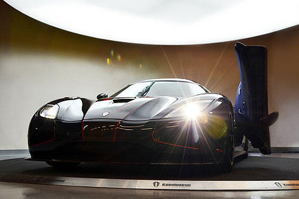
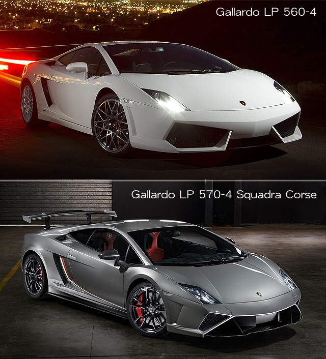
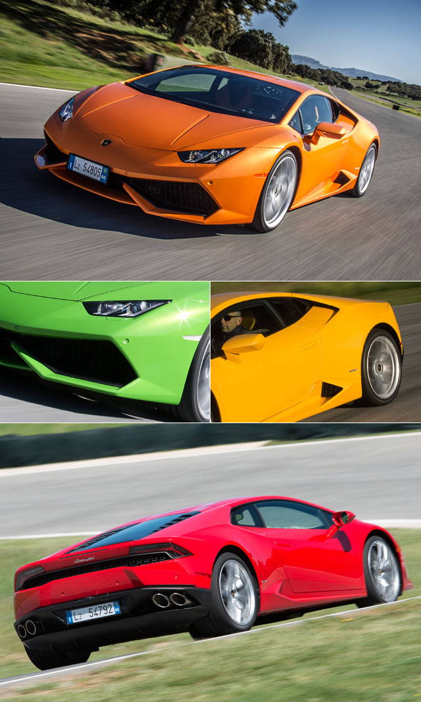
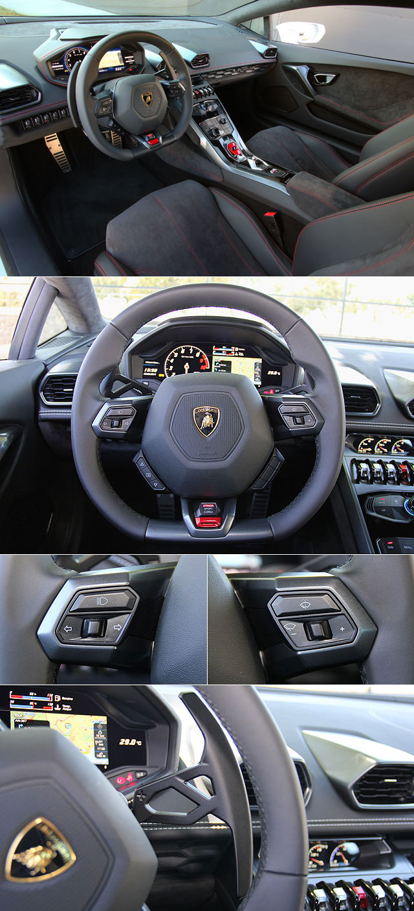
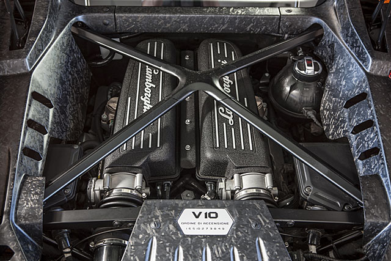
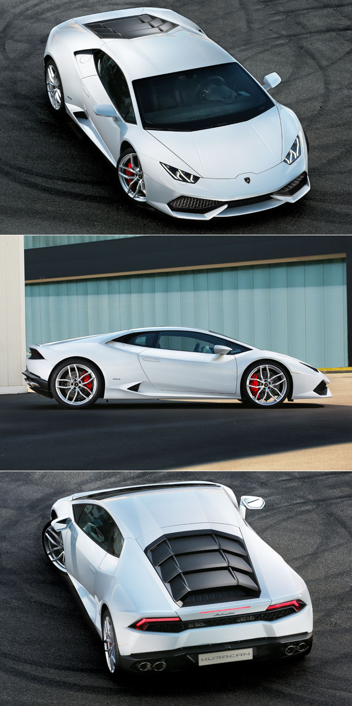

《Koenigsegg Agera R BLT》
即將登陸對岸的夢幻超跑～  大家還記不記得在有為曾經分享過的史上馬力最大車車TOP 10中，以高達1140匹最大馬力名列第六名的Koenigsegg Agera R呢？如果有機會能夠擁有這樣的夢幻超跑，你會不會希望它看起來是獨一無二的呢？最近Koenigsegg就依照買家的需求打造了一輛客製化的Agera R BLT，快跟著有為一起來看看吧！ 原汁原味的內容在這裡
|
|
|---|
| Huracán車系的誕生是為了承繼Lamborghini旗下有史以來銷售最成功的一款車型：Gallardo，其自2003推出至2013年總計銷售達14,022輛。 |
Huracán的造型師法家族旗艦超跑Aventador的設計概念， 透過多道銳利的折線搭配極為流線的車頂線條，勾勒出前衛帥氣的造型，另外，原廠還強調除了車頭上那Y字型LED晝行燈之外，全車燈組也都大量運用LED燈組，帶來更加新穎科技的視覺效果，並擁有搶眼的夜間識別性。同時，也為了操控表現而賦予其低風阻的車身設計，全車多處還採用碳纖維與鋁合金材質打造，使其擁有1,422公斤的空車重，以期在動態中能夠展現輕量化優勢。
| Huracán簡潔的車頭加入了不少立體線條設計，由光影的變化更可明顯看出，前保桿兩側採用大型的進氣柵造型，搭配自前行李廂蓋向車頭延伸的線條，創造出相當凶悍的視覺效果。 |
車室內裝部分，Huracán除了擁有多項十分具有戰鬥氣息的設計之外，儀表板還採用12.3吋的TFT彩色液晶螢幕，提供駕駛良好的識別度，另外包含輔助儀表、資訊娛樂整合系統和旅程資訊顯示幕亦採用液晶螢幕，傾斜式中控台則是採用特殊的輕量化複合材質打造。在強調科技和性能化之餘，車室內也大量運用Fine Nappa皮革與Alcantara麂皮包覆，展現品牌豪華精緻的手工藝水準。
| Huracán具有全新造型的三輻式跑車化方向盤，並刻意採用下緣平整及橢圓形握把設計，盤輻下方為ANIMA動態駕駛模式選擇器旋鈕，並將方向燈及雨刷控制改採於方向盤上的按鍵控制，方向盤後方則具備了大型換檔撥片。 |
傳動與操控部分，Huracán車系首發車型：Huracán LP 610-4，搭載一具5.2升V10引擎，可於引擎轉速8,250轉時，輸出最大馬力610匹，並於6,500轉時提供57.1公斤米最大扭力，與Lamborghini首見的7速LDF雙離合器變速箱、電控四輪驅動系統和輕量化車重搭配後，可在3.2秒完成靜止加速至時速100公里的衝刺，靜止加速至時速200公里也只要9.9秒，極速則是可超越每小時325公里。另外，為了提升環保油耗表現，Huracán LP 610-4也擁有怠速熄火系統，並同時搭載了MPI多點噴射與IDS (Iniezione Diretta Stratificata) 缸內直噴系統，可兼顧輸出與排放。
| Huracán LP 610-4所配置的5.2升V10自然進氣引擎，搭配IDS+MPI雙供油系統，將動力進一步提升至610匹的最大馬力，最大扭力輸出亦進步至57.1公斤米，同時在排污方面也已通過歐盟六期的規範。 |
操控表現方面，Huracán LP 610-4除了擁有LMR電控四輪驅動系統、加持強化其操控穩定性之外，駕駛還可透過方向盤上的ANIMA動態駕駛模式選擇器旋鈕，在Strada (街道)、Sport (運動) 和Corsa (賽道) 共3種模式間調整，引擎、變速箱、ESC車身動態穩定系統與四輪驅動系統，將會依據此3種駕駛模式而調整，以貼近性能玩家當下的駕駛需求，而所標配的陶瓷碳纖維煞車系統，則是為其提供穩定高效的制動表現。除此之外， Lamborghini還提供Huracán LP 610-4可選配LDS電子動態轉向系統與LMR主動式電磁懸吊系統，可進一步強化操控表現。
|  |